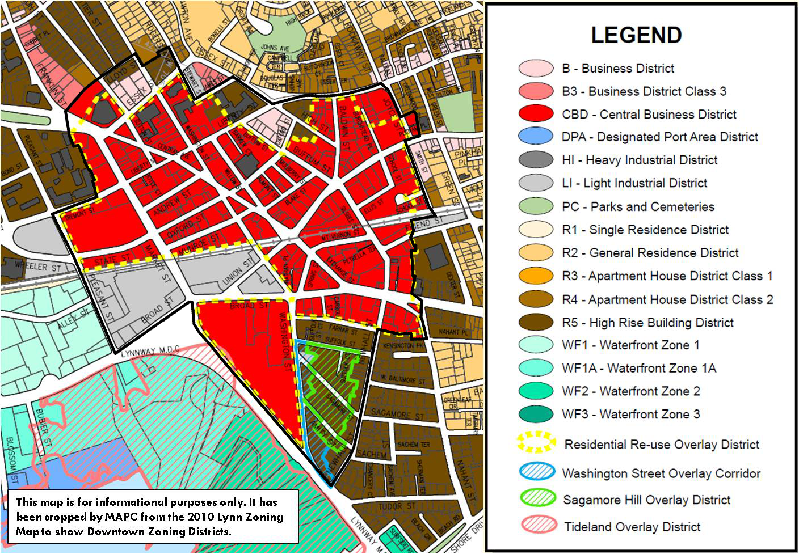

|
Downtown Zoning
|  This is a cropped image of Lynn's zoning map as of 2010, along with the boundary of the MAPC study area shown in black. |
Zoning is tied directly to the success of Downtown Lynn, as it is the key mechanism for directing desired growth within the community. Zoning provides the legal framework for what can and cannot be developed on every parcel of land within downtown and the larger community. This includes the types of uses that are or are not allowed, the massing and siting of structures, the amount of required parking, and environmental and open space considerations.
Thus a review of downtown zoning in the City of Lynn’s Zone Ordinance (with Amendments through December, 2010) was undertaken as part of the project. The purpose of the review was to identify potential impediments to desired development within the study area. Analysis focused on identifying those uses that can be built as of right, those that require special permit approval, and those that are prohibited. In addition, the zone ordinance was reviewed to better understand various procedures required for project approval.
Key Findings:
- The zone ordinance is old, has many amendments, and not intuitive.
- Use allowances and definitions within the ordinance are often too general, confusing, and at times contradictory.
- The vast majority of study area parcels fall within the Central Business District (CBD) zone, which allows primarily for institutional, office and retail uses as of right.
- Many uses typically allowed as of right within a downtown either require a special permit by the City Council (e.g. new residential) or are not allowed at all within the CBD, and may adversely impact the ability of the city to draw developers to downtown.
- Adaptive reuse artist/live-work residential units are allowed as of right in the Residential Reuse Overlay, as long as 75 percent of ground floor is used for retail. However limited opportunity remains as most eligible buildings have been converted.
- Outdated, light industrial districts remain within the study area.
The Zone Ordinance:
Originally approved in June 1925, the existing Lynn Zone Ordinance is outdated. However, rather than undertaking a full rewrite process to reflect changing perspectives regarding preferred land use and development patterns, the city has chosen to adopt numerous amendments to the dated ordinance over the years. This includes revisions to existing district requirements along with the addition of new overlay districts, to better promote or prohibit certain uses in targeted areas. This process has resulted in an ordinance that is difficult to navigate, is alternatively too general or complex, and at times contradicts itself. As a result, it can be difficult to decipher what is and what is not allowed to be built, thus eliminating the predictability favored by developers and businesses looking to invest in the city.
Downtown Zoning Districts
Four base zoning districts and three overlay zoning districts were identified within the downtown study area. They are listed below, followed by a more detailed analysis of each.
- Central Business District (CBD)
- Business Districts (B)
- High Rise Residential District (R-5)
- Light Industrial District (LI)
- Residential Re-use Overlay District
- Sagamore Hill Corridor Overlay District (SHCO)
- Washington Street Overlay District (WS)
Central Business District (CBD): The overwhelming majority of downtown study area parcels are included within the Central Business District (CBD) zoning. Unfortunately, CBD zoning in many ways constrains the type of development often associated with successful downtown live, work and play environments. Although the CBD zone allows for many institutional and commercial uses as of right (e.g. retail, general office, professional offices, schools, public buildings, and others), several uses typically allowed as-of-right within downtowns require a special permit by the City Council in Lynn. This may deter potential investment in the downtown area, as it presents an uncertain outcome for developers of proposed projects.
The most significant development constraint within downtown is the special permit requirement for new residential development - a key component to successful downtown areas and transit-oriented communities. Currently, only residential projects with up to 25 units are allowed as of right in the Residential Reuse Overlay District (for more information on the overlay, see below). New residential construction of any type, not just multifamily, is only allowed through a special permit process. This creates uncertainty for those looking to develop residential in downtown as there is no guarantee the projects for which they might invest pre-development resources will be approved. Nor does it send the message to the development community that residential is a priority for downtown when it can be denied through a special permit process.
Similarly, some commercial uses that enliven downtown streets also require a special permit in Lynn. This includes downtown staples such as eating and drinking establishments of any kind, places of assembly, private recreation (fitness centers), and hotels. Other common uses are not allowed even by special permit. These include conference centers and research and development (R&D) facilities, both of which bring visitors and workers to a downtown, thus increasing the consumer base for downtown retail establishments. While these uses are not permitted, several non-pedestrian oriented uses not typically found in downtown environments, like sales rooms for motor vehicles and drive-through banks, are allowed as of right.
Further complicating developer or business owner certainty, some use descriptions appear to contradict what is and is not allowed. For example, the use table indicates manufacturing is not allowed in the CBD even by special permit, but General Office, which is allowed as of right, is defined as “Offices used for a general range of businesses and business services, including, but not limited to, any manufacturing or manufacturing related assembly.” It appears that manufacturing or assembly may be allowed as an office use, or it may be an attempt to allow for uses like Research and Development (R&D), which typically include office space associated with some limited (but non-production) manufacturing or research. This lack of clarification may deter interested parties from developing uses that are perceived to be incompatible with industrial activity (e.g. residential). Even if no industrial use is currently operating in the area, it does not mean it would not be able to in the future under the current zoning.
Business District: A scattering of parcels in the northwestern section of the study area are zoned as Business (B). Essentially, the business district zoning allows for the same uses as the CBD; however, some light industrial uses are also allowed (e.g. contractor’s storage yard), and artist/live/work spaces are prohibited. It is unclear why these parcels were not included in the CBD, and the City may wish to rezone them as such.
Light Industrial: Several parcels south of the commuter rail tracks remain zoned as Light Industrial (LI), a remnant from the city’s industrial past. LI districts only allow for light manufacturing, limited institutional, and agricultural uses as of right with site plan review. Many of these uses are typically considered incompatible with a live-work-play environment. Fortunately, existing uses on the sites, such as the Eastern Bank office, better reflect those allowed within the surrounding CBD district. However, the site’s development, which is close to the commuter rail station, does not encourage a pedestrian-friendly, active urban environment, as it is set back considerably from the road and surrounded by surface parking.
High Rise Building District: High Rise Building Districts (R5) are located in the southeast corner and along the northern periphery of the study area. The district name is a bit of a misnomer, as it allows for a range of residential types from single family to multi-family apartment structures up to 60 feet (5 stories). Residential structures over 60 feet require a special permit. However, because the majority of R5 zoning within the study area falls under two overlays, the Washington Street District and Sagamore Hill Corridor Overlay, allowed uses are very different than in a typical R5 areas. (Both overlays are discussed below.)
Zoning Overlay Districts
Residential Re-use Overlay District: The Residential Re-use Overlay District, adopted in 2003, includes CBD zoned parcels within 1,500 ft of the Lynn Commuter Rail station – which includes virtually all CBD parcels with a few exceptions along the periphery. The overlay, which is buried in the zoning ordinance as a footnote, provides the only mechanism for as of right residential development in the CBD (up to 25 units as of right, more with a Special Permit). It also requires retail and services (including restaurants as of right) to occupy at least 75 percent of the ground floor in all redevelopment projects. The adoption of the residential reuse district has been a success, and in many ways served as the catalyst for reinvestment downtown - nearly all buildings with potential for residential reuse have been converted bringing hundreds of new residents to downtown.
Washington Street District and Sagamore Hill Corridor Overlay: The Washington Street District (WS) overlay and Sagamore Hill Corridor Overlay (SHCO) district work to implement goals and strategies set forth in the mixed-use Washington Street Gateway Plan (2008), which is referred to directly in Section 16B Site Plan Review in the zoning code. (For more on Washington Street Gateway Plan, click here.) The districts are mapped adjacent to each other in the R5 district in the southeast corner of the study area, and work to create a more vibrant mixed-use environment with a more diverse and active mix along the Washington Street spine that transitions more gradually to the residential-only district to the east.
The Washington Street District, adopted in 2010, includes all R5 parcels with frontage along Washington Street. (The district was recently expanded to include some additional parcels as part of a development initiative by Lynn Housing Authority and Neighborhood Development.) The overlay allows for a wide range of residential and commercial uses in the hopes of creating a mixed-use gateway into downtown. The overlay limits as of right residential uses within the R5 district to higher density row houses, apartment houses, and multi-family high rise developments. Single family is not allowed. Significantly, the overlay also allows for commercial uses typically found in downtown mixed-use environments, including retail stores, eating and drinking establishments as of right (excluding drive-throughs), general and professional offices, hotels, retail stores and places of assembly and recreation.
The adjacent Sagamore Hill Corridor Overlay (SHCO) is the transitional district between the WS overlay and the larger R5 district, and allows for a more limited mix of commercial uses as of right compared to the WS overlay, , including general offices, places of assembly for private recreation (fitness centers), retail stores and custom workshops, but does not allow uses like boarding houses or eating and drinking establishments.
Special Permits and Site Plan Review
Special Permits: As highlighted above, many uses typically found in downtowns require a special permit within the study area including new residential development and other uses identified in Section 4.4 and section 12.1. Uses requiring a special permit are approved or denied by the City Council. Effects upon the local neighborhood and the city as a whole are considered, and no project will be approved if the use would result in “substantial injury.” Although the procedure itself is quite clear, review criteria are vague which may deter potential investment, since clarity and predictability are attractive to developers and business owners.
Special Permit Procedure
- Proponent must submit a written application to the City Clerk, who is also the City Council Clerk.
- City Council will issue a notice of public hearing.
- City Council holds a public hearing and renders a decision. Permit may be denied, accepted, or accepted with conditions.
- If accepted, permit is good for 2 years.
Site Plan Review: In addition to the special permit process, one of three separate site plan reviews may be required depending on the type of development or the zoning district in which the project will be built. Although the procedures are fairly clear, reviews appear to be subjective, and can take 90 days or longer (up to 160 in some instances), depending on receipt of materials and on the approval process.
In the CBD, Section 16 requires a site plan review by the Planning Department for all projects seeking a special permit that include new construction, an enlargement of more than 500 gross square feet, or parking and loading areas. Minimum requirements include a professional site plan showing methods of egress and access, siting of existing and proposed buildings, total gross floor area, height, and more; a water and sewer utilities plan; a stormwater plan; a parking plan, etc. Additional materials, like traffic impacts, may also be required.
Section 16B, Central Business District Site Plan Review applies only to reuse projects within the Residential Reuse Overlay, and is performed by the Lynn Central Square Site Plan Review Committee (SPRC) after submission to the Office of Economic and Community Development. Review is more specific than in Section 16, and requires from the applicant additional materials including renderings of all facades of proposed buildings, location and type of residential and commercial access, use of all abutting buildings, location/materials/sizes of all signs, and more. Additionally, the SPRC may hold as many meetings as necessary to review the proposal with the applicant within a 35 day period, which can be extended by an additional 30 days if needed.
Section 16B Waterfront Zone Site Plan Review, which includes applicable projects within the WS and SCHO overlay districts, requires the most extensive review, which can take up to a maximum 160 days. In addition to requirement similar to those in 16B, the review also states that development must be consistent with the City of Lynn Waterfront Master Plan.
Parking
Parking requirements within the Lynn Zone Ordinance are uniform by use type no matter the location within the city. As a result, downtown development projects require the same amount of parking as those in more suburban locations. According to Section 9, Off-Street Parking Requirements, every multi-family residential unit requires 1.5 spaces per unit (excluding elderly units, which require 0.25 spaces per unit), retail and office establishments require 3.5 spaces per 1,000 gross square feet, and restaurants require 1 space for every 4 seats. These are quite high for a downtown environment and could serve as an impediment, especially if expensive structured parking is required to accommodate the number of spaces. They should be revised to better reflect a walkable, transit-served urban environment.
In particular, the 1.5 spaces per multifamily unit is high for studio or 1-bedroom units in a downtown where more residents are likely to walk or take transit or are more likely to have one car per household. The 3.5 spaces for every 1,000 gross sf of downtown retail is also high, given that many customers likely live or work in the area, and will not require a parking space. In fact, many municipalities do not require any off-street parking for commercial uses in downtowns, rather they assume that the community will accept this responsibility (street parking, municipal lots and structures, of which there are many in downtown). Further, although office parking requirements make sense in suburban areas where nearly all employees will access jobs by automobile, they should be lowered in downtown where some workers will likely arrive by transit (bus, commuter rail), and some will walk or bike. Also, downtowns often present opportunities for shared parking since adjacent uses (e.g. office and residential) often don’t require parking at the same time. Strategies for better use of underutilized parking (e.g. MBTA garage) can also alleviate the need for more parking. |
|